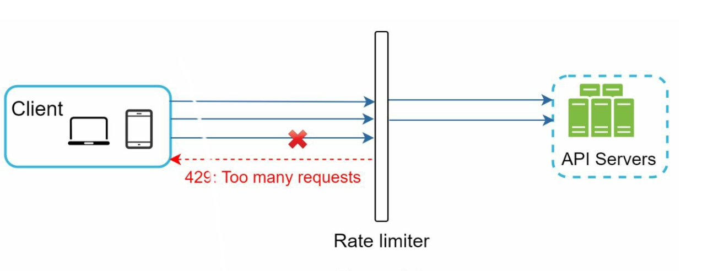
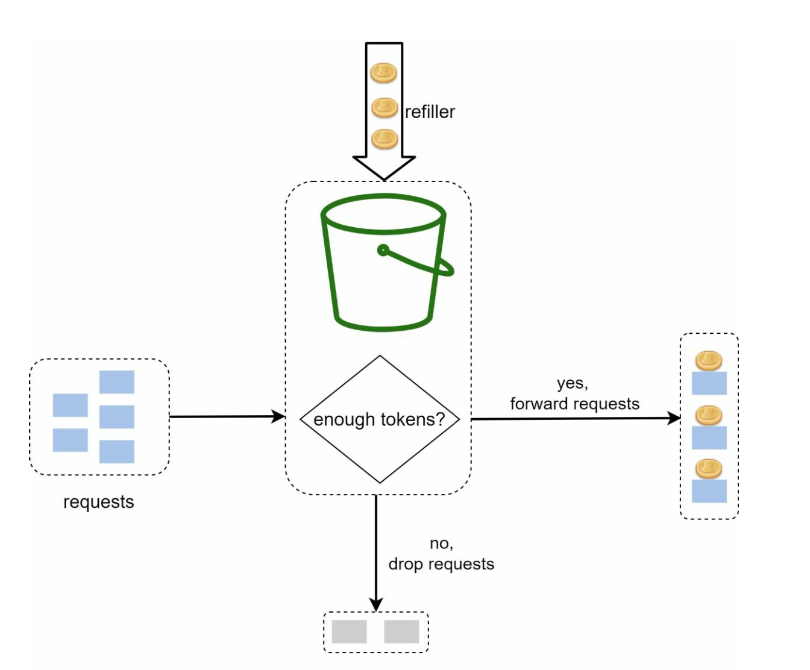
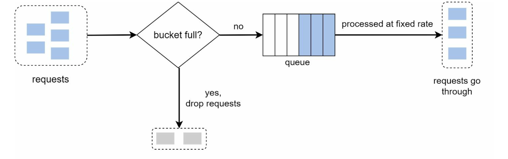
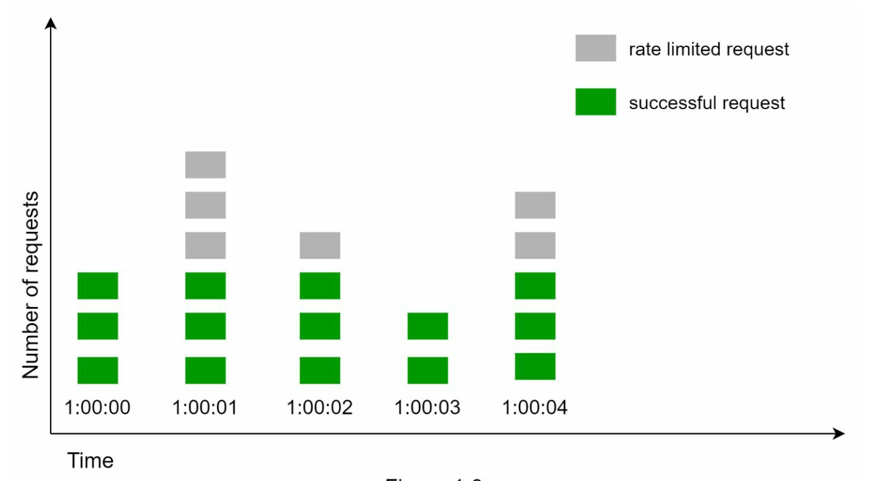
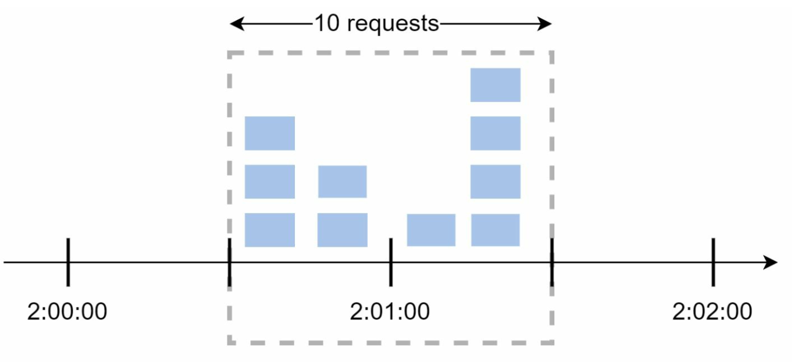
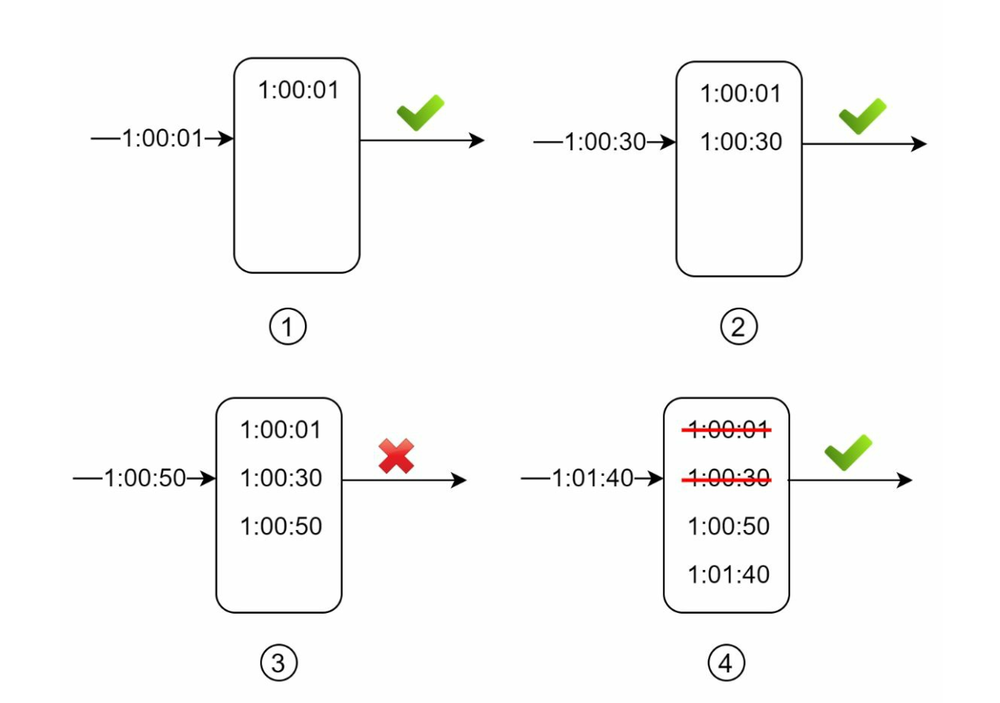
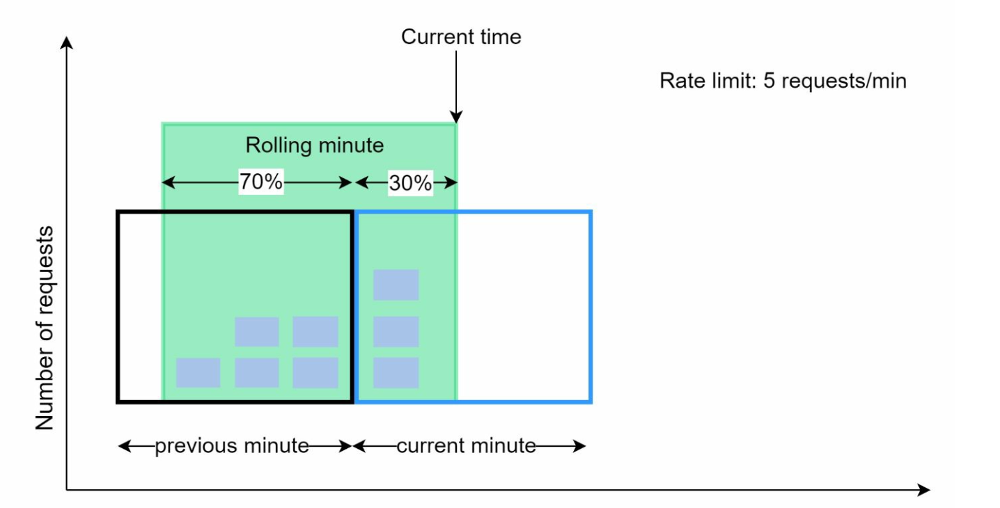
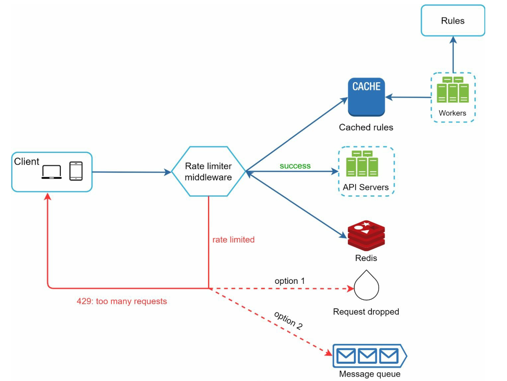

第 4 章：设计限流器
原章节：Design a Rate Limiter · 原项目路径
04. Rate Limiter/
本章导读
想象你的登录接口没有做任何限制。某个脚本小子写了个 for 循环，每秒发一万次登录请求，试你的密码。你的数据库连接池被打满，正常用户全部登录失败。
这不是假设——这是每个上线过的服务都遇到过的真实场景。
「限流器（Rate Limiter）」就是解决这类问题的组件：它决定"单位时间内，某个主体最多能做多少次某个操作"。
这一章是全书第一个完整的系统设计题。它比第 1 章具体，比后面的章节简单，非常适合用来练习第 3 章的面试框架。而且限流器本身就是面试高频题——因为它足够小，能在 45 分钟里讲透；又足够深，能一路问到分布式一致性和故障降级。
学完这一章，你应该能回答：限流器该放在客户端、网关还是服务端？五种限流算法各自的代价是什么？为什么分布式限流必须保证原子性？限流器自己挂了的时候，应该放行还是拒绝？
你将学到
- 限流的三个业务价值，以及它和"节流、熔断、降级"的区别
- 限流器的三种部署位置及各自的适用场景
- 五种限流算法的原理、优缺点和适用场景，以及一张完整的对比表
- 限流系统的整体架构，以及限流规则该定义在哪个维度上
- 分布式限流的核心难题：为什么"读-判断-写"三步必须原子，Lua 脚本如何做到
- fail-open 与 fail-closed：限流器自身故障时的关键决策
- 工业界实现：Redis
INCR+EXPIRE、redis-cell、Nginxlimit_req、Envoy
1. 什么是限流器，为什么需要它
「限流器（Rate Limiter）」是一个控制客户端或服务发送请求速率的组件。它可以作用在 API 层，也可以作用在更底层（比如 TCP 连接数、数据库连接数）。
原笔记给了三个业务价值，逐条展开：
价值一：防止拒绝服务攻击（DoS / DDoS）
攻击者用大量请求淹没服务，目的是耗尽你的资源（CPU、内存、数据库连接、带宽），让正常用户无法使用。限流器把超额的请求挡在门外，保护后端的资源不被抢光。
需要说清楚的是：限流器不是 DDoS 防护的完整方案。它只能挡住"应用层"的请求洪流。真正的流量型 DDoS（比如用僵尸网络打满你的带宽）要在更上游处理——CDN、清洗中心、云厂商的防护服务。限流器是纵深防御中的一层，不是全部。
价值二：降低成本
每一次请求都要消耗资源。如果某个调用方因为写错了循环，每秒钟发十万次无意义的查询，你会为这些请求付出真实的金钱——云数据库的 IOPS 是按量计费的，带宽是按流量计费的。限流可以挡住这部分浪费。
价值三：防止过载
即使请求都是合法的、来自真实用户的，也可能超过系统的处理能力。限流器把流量削到系统能承受的水平，保证已经进入系统的请求能正常完成，而不是所有请求都变慢、最后一起超时。
业务场景举例（原笔记给的三个例子都很典型）：
| 场景 | 限制什么 | 为什么 |
|---|---|---|
| 发帖 | 每用户每分钟最多 5 条 | 防垃圾信息、防机器人刷屏 |
| 注册账号 | 每 IP 每天最多 10 个 | 防批量注册小号 |
| 领取奖励 | 每用户每天 1 次 | 防刷单、防薅羊毛 |
顺带分清四个概念
初学者经常把这四个词混着用，但它们的含义完全不同：
| 概念 | 英文 | 做什么 | 例子 |
|---|---|---|---|
| 限流 | Rate Limiting | 超过阈值就拒绝请求 | 每秒超过 100 次，返回 429 |
| 节流 | Throttling | 超过阈值就放慢（排队、延迟） | 超过 100 次/秒的部分排队等待 |
| 熔断 | Circuit Breaking | 停止调用一个正在故障的下游 | 下游错误率超过 50%，直接不调用它 |
| 降级 | Degradation | 返回功能不完整但可用的结果 | 推荐服务挂了，返回热门榜单兜底 |
限流是"拦"，节流是"缓"，熔断是"断"，降级是"退"。 四个词在面试里混用会显得很不专业。
2. 第一步：理解问题、明确需求
对应原笔记的 Step 1: Understanding the Problem
按第 3 章的框架，第一步要先澄清需求。原笔记列出了两组内容，这里整理清楚。
功能性需求（Key Features）
- 服务端的 API 限流器
- 支持多种限流规则（不同 API 不同阈值）
- 在分布式环境下能正常工作
- 可以选择做成独立服务，也可以做成应用内的代码库
- 被限流时要明确告知用户
非功能性需求（Requirements）
- 精确限流：不能误杀（把合法请求拒掉），也不能漏放（让超额请求通过）
- 低延迟：限流器在请求关键路径上，它慢一点，所有请求都慢一点
- 低内存占用：要为海量用户维护计数器，内存效率必须高
- 分布式能力：多个节点共享同一套限流状态
- 异常处理清晰：被限流时要返回明确的状态码和提示
- 高容错：限流器自身故障时，不能把整个服务拖垮
这里有个需要主动澄清的关键问题（原笔记没提）： "限流器应该精确到什么程度？" 因为"精确"和"低延迟 + 低内存"是矛盾的。精确的方案（比如滑动窗口日志）要为每个请求存时间戳；省内存的方案（比如固定窗口计数器）在窗口边界上会放过多余的请求。 主动问出这个问题，并说明你选择哪种取舍，是面试中的加分动作。
完整话术示例
"在开始设计前，我先确认几个问题。
限流维度：我们是按用户 ID 限流、按 IP 限流，还是按 API key？不同维度对应不同的存储结构和 key 设计。我的假设是按用户 ID 为主，IP 为辅（未登录用户按 IP）。
部署形态：限流器是做成一个独立的服务，还是作为中间件嵌入网关？我的假设是作为 API 网关的中间件，这样所有服务的限流逻辑统一。
规则数量：大概有多少条限流规则？是几十条还是几万条？这决定了规则是放配置文件还是放数据库。
精确度要求：我们允许在窗口边界上有少量超额请求吗？如果允许，我可以用滑动窗口计数器省下大量内存；如果要求严格，就必须用滑动窗口日志。
被限流后的行为：是直接返回 429，还是排队等待？我默认是直接拒绝并返回 429 +
Retry-After头。故障时的行为：如果限流器依赖的 Redis 挂了，是放行所有请求，还是拒绝所有请求？这个我们待会儿要专门讨论。
我先按这些假设往下走。"
3. 第二步：高层设计——限流器放在哪里
对应原笔记的 Step 2: High-Level Design
限流器可以放在三个位置，各有取舍。

位置一：客户端实现
把限流逻辑写在客户端（App、SDK、前端）里。
缺点：客户端完全不可信。
- 攻击者可以绕过客户端，直接调你的 API
- 用户改一下配置就能关掉限流
- 客户端版本发出去就收不回来，规则改了要等用户升级
结论：客户端限流只能作为"体验优化"（比如避免用户误操作触发限流），不能作为安全措施。
但有一个例外值得知道：客户端主动配合限流是很有价值的。比如客户端收到 429 后，按
Retry-After退避重试，而不是立刻重试。这不是"限流"，是"礼貌"。真正的限流必须在服务端。
位置二：服务端实现
限流逻辑放在 API 服务内部（比如一个拦截器 / 中间件）。
优点：完全可控，服务端说了算。
缺点：如果有很多个服务，每个服务都要实现一遍限流逻辑，规则散落各处，难以统一管理和修改。
位置三：中间件（API 网关）
把限流做成 API 网关（API Gateway）的一层。
优点：
- 集中管理：所有服务的限流规则在一处配置
- 统一实现：不用每个服务重复造轮子
- 和微服务架构天然契合
缺点：网关是单点，需要保证它自身的高可用和低延迟。
怎么选（原笔记给的选型指南）
| 原则 | 说明 |
|---|---|
| 评估现有技术栈，选效率最高的方案 | 如果你已经用了 Nginx / Envoy / Kong，直接用它们的限流能力 |
| 根据业务需求选择算法 | 见第 4 节的对比表 |
| 用微服务架构就用 API 网关 | 这是最自然的选择 |
| 资源有限就买商业方案 | 云厂商的 API 网关通常自带限流，不用自己造 |
补充一条原笔记没说的工程判断： 限流最好在多层同时做。 真实系统通常是：
- 接入层（Nginx / Envoy）：做粗粒度的 IP 级限流，挡住明显的洪水攻击
- 网关层：做用户级 / API key 级的业务限流
- 服务层：做最细粒度的业务规则（比如"每个用户每天最多领 1 次奖励"）
为什么要分层？因为越靠外层，能挡掉的流量越多，代价越小。让洪水在接入层就被挡掉，后面的组件就不用承担这份压力。
4. 第三步：深入设计——五种限流算法
对应原笔记的 Step 3: Rate Limiting Algorithms
这是本章的核心。五种算法，我们从最简单的开始。
算法一：令牌桶（Token Bucket）

怎么工作
想象一个水桶，旁边有个水龙头以固定速率往里滴"令牌"：
- 桶的容量固定（比如 5 个令牌），装满就不再增加
- 每来一个请求，就从桶里取走 1 个令牌
- 桶里有令牌 → 请求放行；桶是空的 → 请求被拒绝（或排队）
两个参数：
- 桶容量（Bucket Size）：决定能承受多大的突发流量。容量 5 意味着最多允许连续 5 个请求瞬间通过。
- 补充速率（Refill Rate）：决定长期的稳定速率。比如每秒补 1 个令牌，长期平均就是 1 QPS。
为什么它能支持突发流量？
这是令牌桶最重要的特性。如果桶容量 10、补充速率 1/秒，那么：
- 系统空闲了 10 秒，桶里攒了 10 个令牌
- 突然来了 10 个请求 → 全部放行（瞬间 10 QPS）
- 之后的请求只能按每秒 1 个的速度通过
也就是说，长期速率被限制在补充速率上，但允许短时间内的突发。这非常符合真实业务的形态——用户不是匀速操作，而是"安静一会儿，然后连着点几下"。
优点：实现简单、内存占用极小（只需存两个数字：当前令牌数、上次补充时间）、支持突发。
缺点：两个参数需要调优。容量太小挡不住正常突发，容量太大又失去了保护作用。
工程实现的关键技巧：不需要真的开一个定时器去补令牌。 只需存"当前令牌数"和"上次补充的时间戳"。每次请求来时，按时间差惰性计算应该补多少令牌：
应补令牌数 = (当前时间 - 上次补充时间) × 补充速率 当前令牌数 = min(桶容量, 当前令牌数 + 应补令牌数)这叫惰性计算。省掉了后台定时任务，是令牌桶在生产环境中唯一合理的实现方式。
算法二：漏桶（Leaky Bucket）

怎么工作
想象一个底部有个小孔的桶：
- 请求进来先放进一个先进先出队列（FIFO Queue）
- 桶底以固定的速率把请求"漏"出去（交给后端处理）
- 队列满了，新来的请求就被丢弃
和令牌桶的区别是什么？
这是初学者最容易搞混的地方，一句话说清：
令牌桶限制的是"速率上限"，允许突发；漏桶强制的是"恒定流出速率"，不允许突发。
- 令牌桶：桶里攒了令牌，突发请求就能立刻全部通过。
- 漏桶：无论进来多快，出去的速度恒定不变。突发只能排队等待。
优点：内存占用小（只需要一个队列）；流出速率绝对稳定，这对保护脆弱的下游特别有用。
缺点：突发流量会填满队列，后续的请求要么长时间等待，要么直接被丢弃。
适用场景：下游是一个处理能力固定、且不能被突刺冲击的服务。比如给第三方支付网关发请求——对方要求你必须匀速调用，这时候漏桶就是正确选择。
一个典型的工业实现：uber-go/ratelimit（原笔记给的链接）。它实现了"不漏桶"式的限流——调用方会阻塞到下一个令牌可用为止。
术语提醒：原笔记把这个算法写成了 "Leaking Bucket"，正确术语是 "Leaky Bucket"。详见【勘误 1】。
算法三：固定窗口计数器（Fixed Window Counter）

怎么工作
- 把时间切成固定长度的窗口（比如每 1 分钟一个窗口）
- 每个窗口维护一个计数器，初始为 0
- 请求进来，计数器 +1
- 计数器超过阈值 → 拒绝；到了下一个窗口，计数器归零
优点：实现极简单，内存占用小（每个窗口只需要一个整数）。如果业务对精度要求不高，这是最经济的选择。
缺点：窗口边界问题。
这是这个算法唯一的、但很严重的缺陷。看一个具体例子：
假设限制是"每分钟最多 3 个请求"，窗口按自然分钟切分。
时间轴： |---- 00:00 ~ 00:59 ----|---- 01:00 ~ 01:59 ----|
请求分布： 58s 59s | 00s 01s 02s
每个窗口计数： 2 个 | 3 个
- 00:00–00:59 这个窗口只有 2 个请求 → 没有超限
- 01:00–01:59 这个窗口有 3 个请求 → 也没有超限
但是在 00:00:58 到 01:00:02 这 4 秒内，一共通过了 5 个请求。
而这 5 个请求全部落在"00:00:58 到 01:00:58"这个 60 秒的滑动区间内——这个区间里的请求数是 5，是限额 3 的 1.67 倍。

这就是原笔记说的"窗口边缘的流量突刺会让实际通过的请求数超过配额"。攻击者只要卡在窗口切换的瞬间发请求，就能拿到接近 2 倍的配额。
算法四：滑动窗口日志（Sliding Window Log）

怎么工作
- 为每个限流主体维护一个有序集合，里面存每一次请求的时间戳
- 新请求到来时，先删掉所有落在窗口之外的时间戳（比如删除 60 秒之前的）
- 剩下的元素个数就是当前窗口内的请求数
- 如果数量 < 限额 → 放行，并把当前时间戳加入集合；否则拒绝
优点：完全精确。因为它记录的是真实的请求时间，窗口是真正"滑动"的，不存在固定窗口的边界问题。
缺点：内存消耗极高。
假设限制是"每小时最多 100 万次请求"，那么最坏情况下你要为单个用户存 100 万个时间戳。一个时间戳按 8 字节算就是 8 MB，10 万个用户就是 800 GB——完全不可接受。
所以滑动窗口日志只适合限额很小的场景（比如"每分钟 5 次"这种）。原笔记给的"高内存消耗"这个判断是准确的。
实现提示：在 Redis 里用 Sorted Set（ZSET） 实现——member 用请求 ID（保证唯一），score 用时间戳。这样既能按 score 范围删除过期元素，又能用
ZCARD取计数。
算法五：滑动窗口计数器（Sliding Window Counter）

怎么工作
这是固定窗口和滑动窗口日志的折中方案，也是最常被工业界采用的方案。
它只保留两个计数器：当前窗口的计数，和上一个窗口的计数。然后用一个加权公式来估算"过去 60 秒内的请求数"。
公式：
估算请求数 = 当前窗口计数 + 上一个窗口计数 × 上一个窗口的重叠比例
其中，重叠比例 = 上一个窗口在当前滑动窗口中所占的比例。
完整算例（这个例子一定要会手推）：
假设限额是每分钟 7 个请求，当前时刻是 01:00:18（即当前窗口已经过去了 30%）。
- 上一个窗口（00:00–00:59）的计数 = 5
- 当前窗口（01:00–01:59）的计数 = 3
那么，过去 60 秒是"01:00:18 往前推 60 秒"，即从 00:00:18 到 01:00:18。这段区间里：
- 完整包含当前窗口已经过去的部分（01:00:00–01:00:18），共 3 个请求
- 包含上一个窗口的后 42 秒（00:00:18–00:59:59），占上一个窗口的
42/60 = 70%
估算请求数 = 3 + 5 × 0.7 = 3 + 3.5 = 6.5
向下取整 → 6
6 < 7，所以新请求放行。
优点：
- 内存占用小（每个主体只需要 2 个计数器，而不是 100 万个时间戳）
- 平滑掉了固定窗口的边界突刺（因为上一个窗口的计数被按比例算进来了）
缺点：它是一个近似，不是精确值。
因为公式假设"上一个窗口里的请求是均匀分布的"，但实际上可能全部集中在窗口末尾。所以估算值可能偏乐观，也可能偏保守。
这是可以接受的取舍吗？ 在实践中通常可以。有公开的工程分析指出，在真实流量下这种近似的误差通常只有百分之几（远小于固定窗口在边界上可能达到的 100% 超额）。面试时说清"这是近似、误差来源是均匀分布假设"，比只说'它是近似的'要有力得多。
五种算法对比与选型
原笔记逐个列了五种算法，但没有横向对比。这张表是本章最需要补上的内容：
| 算法 | 精确度 | 内存 | 支持突发 | 实现复杂度 | 典型适用场景 |
|---|---|---|---|---|---|
| 令牌桶 | 高 | 极低（2 个数字） | ✅ 支持，且可调 | 低 | 通用首选。API 网关、需要允许合理突发的业务 |
| 漏桶 | 高 | 低（一个队列） | ❌ 强制匀速 | 低 | 下游要求恒定速率（第三方 API、脆弱的下游服务） |
| 固定窗口计数器 | 低（边界可超 100%） | 极低（1 个整数） | ❌ | 极低 | 对精度要求不高的粗粒度保护，比如 IP 级洪水拦截 |
| 滑动窗口日志 | 最高（精确） | 极高 | ❌ | 中 | 限额很小的场景（每分钟几次），且要求严格精确 |
| 滑动窗口计数器 | 中（近似） | 低（2 个计数器） | 部分平滑 | 中 | 工业界最常用。要在精度和内存之间取平衡的场景 |
选型决策树（面试时可以直接照着说）：
需要严格精确吗？
├─ 是 → 限额大吗？
│ ├─ 大（每秒几千）→ 滑动窗口计数器（接受近似）+ 短窗口
│ └─ 小（每分钟几次）→ 滑动窗口日志
└─ 否 → 需要允许突发吗？
├─ 需要 → 令牌桶
└─ 不需要，要匀速 → 漏桶
一句话记住：令牌桶是通用答案，滑动窗口计数器是工业答案，滑动窗口日志是精确但昂贵的答案。
5. 把算法落到系统上：整体架构
对应原笔记的 High-Level Architecture 一节
选好算法之后，要把它落成一个真实系统。

数据存储
用内存缓存（如 Redis）来存计数器。
为什么必须是内存而不是数据库？
- 限流器在每一个请求的关键路径上，它的延迟会被加到所有请求上
- Redis 的读写在百微秒级，而 MySQL 在毫秒级——差一个数量级
- 计数器是高频读写的临时数据，不需要持久化保证
补充一点原笔记没说的：限流状态可以接受丢失。如果 Redis 重启，计数器归零，最坏的结果是"短时间内放宽了限流"。这个代价通常可以接受。 所以限流用的 Redis 一般不开 AOF 持久化，甚至可以用
maxmemory-policy noeviction之外更激进的策略——因为它就是一份缓存。这一点和"存用户数据"的 Redis 是完全不同的使用姿势。
三步流程
原笔记给的三步很清晰：
- 客户端发请求到中间件
- 中间件检查 Redis 里的计数器
- 根据限额决定处理还是拒绝
这里要补上第 4 步——被拒绝之后要做什么（原笔记的流程在"拒绝"之后就断了）：
- 如果拒绝：返回 HTTP 429（Too Many Requests），并在响应头里告知用户什么时候可以重试
响应头应该带什么？
| 响应头 | 含义 | 示例 |
|---|---|---|
X-RateLimit-Limit |
窗口内的总配额 | 100 |
X-RateLimit-Remaining |
剩余可用次数 | 7 |
X-RateLimit-Reset |
配额重置的时间（Unix 时间戳） | 1710000000 |
Retry-After |
建议多少秒后重试（配合 429） | 12 |
上面的
X-RateLimit-*是事实标准（GitHub、Twitter 等都在用）。IETF 有一个正在推进的标准草案，去掉了X-前缀，改成RateLimit-Limit/RateLimit-Remaining/RateLimit-Reset。面试时说"我用X-RateLimit-*这套事实标准，同时知道 IETF 在推进无前缀版本"是最加分的答案。为什么一定要返回这些头？ 因为一个"好的"限流器不只拒绝请求，还要让调用方知道如何正确重试。返回 429 但不告诉对方何时可以重试，会导致客户端盲目重试，反而加剧拥塞。
限流规则定义在哪个维度上
原笔记没有提这一点，但它是设计限流系统时必须回答的问题。常见的限流维度：
| 维度 | 适用场景 | 注意事项 |
|---|---|---|
| 用户 ID | 已登录用户的业务限流 | 最准确，但未登录用户没有 ID |
| IP 地址 | 未登录用户、防爬 | 共享 NAT 下大量用户共用一个 IP，容易误杀 |
| API Key / 租户 ID | 面向开发者的开放平台 | 按套餐分级限流 |
| 接口路径 | 保护特定接口 | 常和上面几个维度组合 |
| 全局 | 保护整个系统不被打垮 | 兜底，不区分来源 |
规则怎么组合？ 真实系统通常是多个规则同时生效，取最严格的那个：
规则 1：用户 12345 每分钟最多 100 次
规则 2：IP 1.2.3.4 每分钟最多 500 次
规则 3：/api/login 接口全局每分钟最多 10000 次
→ 三个规则都检查，任何一个超限就拒绝
IP 限流的一个大坑：公司、学校、运营商出口都在用 NAT，一个 IP 背后可能是几万个真实用户。如果按 IP 限得太死，会一次性误杀整个公司。对策：对已登录用户优先用用户 ID；IP 限流只用于"防洪水"这种粗粒度场景，阈值要放得很宽。
6. 第三步（续）：分布式限流、性能与监控
对应原笔记的 Advanced Considerations 一节
单机限流器很简单：一个内存里的计数器就够了。但真实系统是多台机器，问题立刻变得复杂。
分布式环境的核心难题
原笔记只写了一句话："Challenges: Race conditions, synchronization issues. Solutions: Use locks, Lua scripts, or sorted sets in Redis."
这句话太简略了，缺了最关键的一环：为什么需要原子性。 这里完整补上。
为什么需要原子性：一个具体的竞态条件
假设限流规则是"每分钟最多 5 个请求"，计数器存在 Redis 里，当前值是 4。
现在有两个请求同时到达，分别落在两台不同的服务器上：
时刻 T1: 服务器 A 读取计数器 → 得到 4
时刻 T2: 服务器 B 读取计数器 → 得到 4
时刻 T3: 服务器 A 判断 4 < 5 → 放行
时刻 T4: 服务器 B 判断 4 < 5 → 放行
时刻 T5: 服务器 A 写入计数器 → 5
时刻 T6: 服务器 B 写入计数器 → 5
结果：两个请求都放行了，但计数器只涨到了 5。 实际上这个窗口里应该有 6 个请求（原来的 4 个 + 新的 2 个），超额了 1 个。
这就是「竞态条件（Race Condition）」："读 → 判断 → 写"这三步不是一个原子操作，两个请求的这三步交错执行了，导致判断基于的是过期的数据。
问题有多严重？ 在单机限流里，这个问题很小（因为并发窗口极短）。但在分布式限流里：
- 如果有 100 台服务器，每台都在同一瞬间读到
4，就可能放行 100 个请求 - 限额是 5，实际放行了 104 个——限流器彻底失效
面试中一定要说出这句话："分布式限流的第一个难题是竞态条件——读、判断、写必须作为一个原子操作完成，否则并发请求会读到同一个旧值，导致超额放行。"
怎么保证原子性
原笔记给了三个方案，但没说清各自的代价。这里逐个分析：
方案 A：加分布式锁（不推荐）
思路：每个请求先抢一把分布式锁，拿到锁之后再做"读-判断-写"，做完释放锁。
为什么通常不推荐？
- 性能灾难：限流器在每一个请求的关键路径上。加锁意味着所有请求串行化，吞吐量会被锁竞争拖垮。
- 引入新的故障点：锁服务本身挂了怎么办？锁没释放（客户端崩溃）怎么办？需要额外处理锁超时、锁续期。
- 收益不成比例：为了限流这一个操作引入分布式锁，架构复杂度大幅上升。
结论：加锁是"可行但代价过高"的方案。只有在限流逻辑非常复杂、无法用单条原子命令表达时，才考虑它。
方案 B：Lua 脚本（推荐）
这是分布式限流的主流方案。
为什么 Lua 脚本能保证原子性？
关键事实：Redis 执行命令是单线程的，而且一个 Lua 脚本在执行期间，Redis 不会处理其他任何命令。
也就是说，当 Redis 开始执行一个 Lua 脚本时，它会把整个脚本当成一个不可分割的整体执行完，中途不会被其他请求插进来。这正好解决了"读-判断-写"被交错执行的问题。
用 Lua 实现滑动窗口日志的示意：
-- KEYS[1] = 限流 key（如 rate_limit:user:12345）
-- ARGV[1] = 当前时间戳（毫秒）
-- ARGV[2] = 窗口大小（毫秒）
-- ARGV[3] = 限额
local key = KEYS[1]
local now = tonumber(ARGV[1])
local window = tonumber(ARGV[2])
local limit = tonumber(ARGV[3])
-- 1. 删除窗口外的旧记录
redis.call('ZREMRANGEBYSCORE', key, 0, now - window)
-- 2. 统计窗口内的请求数
local count = redis.call('ZCARD', key)
-- 3. 判断是否超限
if count < limit then
-- 4. 未超限：记录本次请求，放行
redis.call('ZADD', key, now, now .. '-' .. math.random())
redis.call('PEXPIRE', key, window)
return 1 -- 放行
else
return 0 -- 拒绝
end
关键点：这四步（删除过期、计数、判断、写入）在同一个脚本里，Redis 保证它们原子执行。无论多少个并发请求同时到达，都不会出现两个请求读到同一个旧值的情况。
一个必须知道的 Redis 坑：如果用的是 Redis Cluster，Lua 脚本里涉及的所有 key 必须在**同一个哈希槽（slot）**上，否则会报
CROSSSLOT错误。 解决办法是使用 hash tag——把 key 写成rate_limit:{user:12345}:window，花括号里的部分决定了分片，保证同一个用户的 key 落在同一个槽上。 面试中能主动提这一点，说明你真的用过 Redis Cluster 做限流。
方案 C：Sorted Set（有序集合）
这其实是滑动窗口日志的数据结构，不是独立的"原子性方案"。
ZREMRANGEBYSCORE删除过期记录ZCARD统计数量ZADD添加新记录
但如果这三条命令分开执行，它依然有竞态条件。 所以正确用法是：把 Sorted Set 的操作包在 Lua 脚本里（就是上面方案 B 的代码）。
结论：原笔记把"Lua 脚本"和"有序集合"并列成两种方案，其实它们是协作关系——Sorted Set 是数据结构，Lua 是保证原子性的手段。
其他分布式问题
| 问题 | 表现 | 对策 |
|---|---|---|
| 状态同步延迟 | 多个 Redis 副本之间同步有延迟 | 限流状态用单个 Redis 主节点（或 Redis Cluster 的单一分片）保证强一致 |
| 跨数据中心延迟 | 用户在美国，限流器在亚洲，每次请求多 150 ms | 每个数据中心独立限流（各分一部分配额），或用就近的限流节点 |
| Redis 成为单点 | Redis 挂了，限流器全挂 | 见下面的 fail-open / fail-closed |
| 热 key | 某个超级用户的计数器被高频访问 | 本地缓存 + 批量上报；或对同一用户做 key 分片 |
性能优化
原笔记给了两条，都很对：
- 多数据中心部署降低延迟——就近限流，但要注意配额如何分配（各机房独立配额，还是全局共享？）
- 最终一致性模型做同步——限流状态不需要强一致，短暂的不一致（多放行几个请求）通常可以接受
再补一条最实用的：
- 本地预检 + 远程精确限流。每台服务器在内存里维护一个粗略的本地计数器，先本地判断；只有本地计数接近阈值时，才去问 Redis。这样能把绝大部分请求的限流判断做成零网络开销。
不过要小心：本地预检会让限额变得不精确（每台机器都有自己的计数）。所以它只适合"防洪水"这类粗粒度场景，不适合"每用户每天 1 次领奖"这种必须精确的场景。
监控
原笔记说："定期分析，确保算法有效，并按需调整规则。"
这句话方向对，但太笼统。具体要监控什么？
| 指标 | 为什么重要 |
|---|---|
| 被限流的请求比例 | 如果超过 1%，说明规则可能太严，正在误杀正常用户 |
| 被限流的请求来源分布 | 是少数几个 IP 在刷，还是大面积用户都触发了？前者是攻击，后者是规则设计错误 |
| 限流器的 P99 延迟 | 它在关键路径上，延迟升高会拖慢所有请求 |
| Redis 的命中率和错误率 | 限流器依赖 Redis，它的健康度就是限流器的健康度 |
| 规则命中分布 | 哪些规则从来没触发过？可能是阈值设得毫无意义 |
一个很容易被忽略的点：限流规则需要和业务方一起 review。规则太松等于没有，太严会误杀用户。这个"调参"过程是持续的，不是一次性的。
7. 第四步（原笔记缺失）：收尾
原笔记在"监控"之后就结束了，没有 Step 4 收尾环节。按第 3 章的框架，收尾要总结取舍、指出不足、提出改进方向。这里补上本章应该有的收尾内容。
硬限流 vs 软限流（Hard vs Soft Rate Limiting）
这是一个非常实用的设计选择：
| 类型 | 行为 | 适用场景 |
|---|---|---|
| 硬限流 | 超过阈值直接返回 429，拒绝请求 | 保护系统不被打垮；对外 API 的配额 |
| 软限流 | 允许请求通过，但打上"超限"标记 | 观察期：先看看新规则会影响多少用户，再决定要不要真的拒绝 |
软限流的价值：上线一条新规则时，先用软限流跑一周，统计"如果硬限流会有多少请求被拒"。避免因为阈值设错而误杀大量正常用户。
不同接口用不同的限流规则
不应该所有接口用同一个阈值。典型的差异化：
| 接口类型 | 限流策略 |
|---|---|
| 读接口（查询） | 阈值可以放宽，因为成本低 |
| 写接口（发帖、评论） | 阈值要收紧，因为要落库 |
| 昂贵接口（报表导出、全量搜索） | 阈值极低，甚至要求排队 |
| 敏感接口（登录、短信验证码、支付） | 阈值最低，且必须 fail-closed（见下） |
客户端如何优雅地应对被限流
限流器设计得好，还要调用方配合。这三条是面试加分项：
- 客户端缓存：减少不必要的请求，从源头降低触发限流的概率
- 指数退避 + 抖动（Exponential Backoff with Jitter）：被限流后，不要立刻重试，等待时间按
1s → 2s → 4s → 8s递增，并加入随机抖动避免"重试风暴" - 尊重
Retry-After头：服务端告诉你等多久，就等多久
import random, time
def call_with_backoff(fn, max_retries=5):
for attempt in range(max_retries):
resp = fn()
if resp.status_code != 429:
return resp
# 优先使用服务端给的 Retry-After
wait = float(resp.headers.get("Retry-After", 2 ** attempt))
# 加抖动，避免所有客户端同时重试
wait += random.uniform(0, wait * 0.1)
time.sleep(wait)
raise Exception("rate limited after retries")
关键决策：限流器自身故障时，放行还是拒绝？
这是本章最重要、也是原笔记完全没提的一个决策。 面试中主动提出这个问题，会显著加分。
限流器依赖 Redis。如果 Redis 挂了，你的限流器该怎么办？ 只有两个选择：
| 策略 | 行为 | 好处 | 代价 |
|---|---|---|---|
| fail-open（故障放行） | Redis 挂了 → 放行所有请求 | 服务保持可用 | 限流失效，可能被洪水打垮 |
| fail-closed（故障拒绝） | Redis 挂了 → 拒绝所有请求 | 保护后端不被压垮 | Redis 一挂，整个服务全面不可用 |
怎么选？
核心判断依据是："失去限流保护"和"服务完全不可用"，哪个后果更严重？
| 场景 | 推荐策略 | 理由 |
|---|---|---|
| 普通读接口 | fail-open | 短时间没有限流不会致命；但全部拒绝会立刻造成全站不可用 |
| 登录 / 短信验证码 / 支付 | fail-closed | 这些接口被刷的后果（盗号、短信轰炸产生真金白银的损失）比短暂不可用更严重 |
| 内部服务调用 | fail-open + 本地兜底 | 内部流量可控 |
实践中最重要的折中：fail-open + 本地兜底限流。
如果 Redis 不可用：
1. 降级到每台服务器内存里的本地令牌桶（阈值设得很宽，比如全局阈值的 1/N）
2. 至少保证单个节点不会被无限打垮
3. 同时触发告警，让人工介入
为什么这是最优解？
- 纯 fail-open 会让后端完全裸奔，一个洪水就能打垮整个系统
- 纯 fail-closed 会让"Redis 抖动 5 秒"升级成"全站故障 5 分钟"
- fail-open + 本地兜底 保住了可用性，同时保留了一层粗糙但有效的保护
面试标准答法： "限流器故障时，默认应该 fail-open——因为限流器是保护层，不是业务功能，它不该成为新的单点故障。但这个默认要分场景：对于登录、验证码、支付这类安全敏感接口，应该 fail-closed，因为被刷的代价高于短暂不可用。生产环境的做法是 fail-open + 本地内存限流兜底 + 告警，既不裸奔也不全挂。"
这个回答包含了三层：默认策略、按场景区分、工程折中。 能说出这三层，说明你真正思考过，而不是背了一个名词。
8. 补充：工业界实现
原笔记只给了 uber-go/ratelimit 一个链接。这里补齐主流实现，面试中能报出具体的产品名和配置项，是明显的加分项。
Redis：INCR + EXPIRE（固定窗口）
这是最经典的实现，也是最容易写错的。
# 每次请求执行：
INCR rate_limit:user:12345 # 计数器 +1，返回新值
EXPIRE rate_limit:user:12345 60 # 设置 60 秒过期
它为什么有坑？
如果 INCR 成功、但在 EXPIRE 之前进程崩溃（或网络中断），这个 key 就永远不会过期。结果是这个用户被永久限流。
正确写法（三种）：
写法一：用 Lua 脚本保证原子性
local current = redis.call('INCR', KEYS[1])
if current == 1 then
redis.call('EXPIRE', KEYS[1], ARGV[1])
end
return current
只在第一次（current == 1）时设置过期时间，且整个操作原子。
写法二：用 SET ... EX ... NX 先建 key
SET rate_limit:user:12345 0 EX 60 NX # 不存在才创建，并带上过期时间
INCR rate_limit:user:12345 # 再自增
写法三：直接在一个命令里完成
SET rate_limit:user:12345 0 EX 60 NX
INCR 本身是原子的，所以计数器不会算错；问题只出在"过期时间可能没设上"。上面三种写法都能解决。
注意：这个方案实现的是固定窗口计数器，所以它有窗口边界的突刺问题（见第 4 节）。它适合"防洪水"这类粗粒度场景。
redis-cell：用 GCRA 实现令牌桶
redis-cell 是一个 Redis 模块，提供 CL.THROTTLE 命令，底层用的是 GCRA（Generic Cell Rate Algorithm，通用信元速率算法）。
GCRA 是什么？ 它是"漏桶作为计量器（Leaky Bucket as a Meter）"的等价实现。它不需要真的维护一个桶和队列，而是用一个**理论到达时间（TAT, Theoretical Arrival Time）**来表示状态——每个限流主体只需要存一个时间戳，内存效率极高。
CL.THROTTLE user:12345 15 30 60 1
# key 上限 补速 窗口 消耗
# → 返回：是否允许、总配额、剩余、重试等待秒数、重置秒数
它的优势：单条命令、原子、返回信息完整（包含 Retry-After 所需的秒数）、内存极省。
选用前需要注意：redis-cell 是一个第三方 Redis 模块，需要单独编译加载；而且项目的更新节奏比较慢。在生产环境选用前，应评估它的维护状态和你的 Redis 版本兼容性。 如果你不想引入模块，用 Lua 脚本自己实现 GCRA 或令牌桶也是常见做法。
Nginx：limit_req（漏桶）
Nginx 内置的 limit_req 模块实现的是漏桶算法，这是它在生产环境中最广泛的用途之一。
http {
# 定义限流区域：按客户端 IP 限流，共享内存 10MB，速率 10 请求/秒
limit_req_zone $binary_remote_addr zone=api_limit:10m rate=10r/s;
server {
location /api/ {
# 应用限流：允许突发 20 个请求，且不延迟处理（nodelay）
limit_req zone=api_limit burst=20 nodelay;
proxy_pass http://backend;
}
}
}
关键参数：
| 参数 | 含义 |
|---|---|
limit_req_zone |
定义限流区域。$binary_remote_addr 是限流维度（这里按 IP） |
rate=10r/s |
漏桶的流出速率 |
burst=20 |
队列容量。允许 20 个请求排队 |
nodelay |
队列中的请求立即处理，而不是按速率平滑放出 |
关于 nodelay 的重要区别：
- 不加
nodelay：超出的请求会排队，并按rate匀速放行——这是标准漏桶行为，会增加响应延迟。 - 加
nodelay：burst范围内的请求立刻放行——这时的行为更接近令牌桶（允许突发），只是超出burst的部分才被拒绝。
这是面试中一个很好的细节：能说出"Nginx 的
limit_req本质是漏桶，但加nodelay后行为趋近令牌桶"，说明你真的读过文档，而不是只知道"Nginx 能限流"。Nginx 还有
limit_conn（限制并发连接数），它和limit_req（限制请求速率）是两个不同的维度，经常一起用。
Envoy：本地限流 + 全局限流
Envoy 作为现代服务网格的数据面，提供了两级限流：
| 类型 | 过滤器 | 特点 |
|---|---|---|
| 本地限流（Local Rate Limit） | envoy.filters.http.local_ratelimit |
每个 Envoy 实例独立计数，用令牌桶实现。零网络开销，但全局配额是"每实例配额 × 实例数" |
| 全局限流（Global Rate Limit） | envoy.filters.http.ratelimit + 外部 RLS 服务 |
Envoy 把请求描述符（descriptor）发给一个 gRPC 限流服务（RLS），由它做全局计数。精确，但多一次网络调用 |
为什么 Envoy 要分两级？
- 本地限流挡掉绝大部分明显的超量流量，不产生网络开销
- 全局限流只对"通过了本地检查、但可能突破全局配额"的请求做精确判定
Envoy 的故障策略是可配置的——在 ratelimit 过滤器里有 failure_mode_deny 选项：设为 true 就是 fail-closed，设为 false（默认）就是 fail-open。这正好印证了第 7 节讲的决策：这不是"对错"问题，而是"配置项"问题，取决于业务场景。
其他值得一提的实现
| 产品 / 库 | 算法 | 备注 |
|---|---|---|
Guava RateLimiter（Java） |
令牌桶 | 仅限单 JVM，不能跨进程共享状态。适合单机场景 |
| Bucket4j（Java） | 令牌桶 | 支持分布式（可接 Redis、Hazelcast、JDBC），API 友好 |
| Kong API Gateway | 多种 | 插件式，支持按 consumer / credential 限流 |
| AWS API Gateway | 固定窗口 | 通过 Usage Plan 配置"速率 + 突发"两个值 |
| Cloudflare | 多种 | 边缘节点限流，能在流量到达源站前就挡住 |
一个选型建议：如果你已经有 API 网关（Nginx、Envoy、Kong），优先用网关自带的限流能力。自己实现一套分布式限流器，要处理的边界情况（原子性、Redis Cluster、fail-open、时钟漂移、规则热更新）比想象中多得多。
勘误与补充
原笔记本章的算法描述基本正确，但在术语、结构完整性和工程深度三个方面有明显问题。以下逐条说明。
勘误 1：Leaking Bucket 是错误的术语
- 原文说法：第二种算法的标题写作 "Leaking Bucket"，配图名为
leaking-bucket.png。 - 问题：
Leaking是"正在漏的"（动词进行时），Leaky是"会漏的"（形容词）。这个算法的标准英文名是 Leaky Bucket——它描述的是"一个会漏的桶"这个容器属性，而不是"正在发生泄漏"这个动作。在英文技术文献、Nginx / Envoy 文档、以及 Alex Xu 原书中，统一写作 Leaky Bucket。 - 正确说法：Leaky Bucket（漏桶）。搜索相关资料时用
leaky bucket才能找到正确的算法资料（用leaking bucket会搜到大量关于"内存泄漏"的无关内容）。 - 延伸：这类术语错误在面试中是明显的减分项——面试官会怀疑你只是"看过中文博客的二手转述"，而不是读过原始资料。本章正文已统一改用 Leaky Bucket。
- 说明：图片文件名
leaking-bucket.png是原项目自带的资源，按规范不做重命名，仅正文术语已更正。
勘误 2：章节结构断层——缺少 Step 4，且 Step 2 的内容被放到了 Step 3 之后
- 原文说法：原笔记的编号是
Step 1: Understanding the Problem→Step 2: High-Level Design→Step 3: Rate Limiting Algorithms，之后直接跳到High-Level Architecture和Advanced Considerations两个无编号小节，没有 Step 4。 - 问题：两处结构问题。
- 缺少收尾环节。按第 3 章的四步框架（也是 Alex Xu 原书的结构），最后必须有 Step 4（Wrap-Up）。原笔记在"监控"之后就结束了，读者看不到"硬/软限流""不同接口不同规则""客户端如何优雅重试"这些收尾内容。
- Step 2 与 Step 3 的内容错位。
High-Level Architecture（整体架构、Redis 存储、三步流程）在逻辑上属于 Step 2 高层设计，却被放在了 Step 3 算法之后。这会让读者误以为"先选算法，再想架构"，而正确的顺序是相反的——先确定架构和存储，再选算法。
- 正确说法：完整的逻辑顺序应为 Step 1 需求 → Step 2 高层设计（部署位置 + 整体架构 + 数据存储）→ Step 3 深入设计（算法 + 分布式 + 性能 + 监控）→ Step 4 收尾。本章正文为了便于你对照原笔记，保留了原笔记的小节顺序，但在第 5 节开头显式标注了它实际属于 Step 2，并补写了第 7 节的 Step 4 收尾内容。阅读时请按上面的逻辑顺序理解，不要按小节编号理解。
- 延伸：这个结构断层不只是"排版问题"。它反映了一个常见的思维误区：把算法当成了设计的起点。 实际工程中，算法只是最后一步的实现选择——先有约束（延迟、内存、精度），才有算法的取舍。
勘误 3：分布式限流只给了结论，没有解释"为什么"
- 原文说法：
Distributed Environments一节只有两句：挑战是 "Race conditions, synchronization issues"，解决方案是 "Use locks, Lua scripts, or sorted sets in Redis"。 - 问题：三个层面的缺失。
- 没解释为什么会有竞态条件。读者不知道"读-判断-写"三步交错执行会导致什么后果，也就无法判断这个问题的严重性。
- 没解释 Lua 脚本为什么能保证原子性。只是把 Lua 列为一个选项，读者会以为它和"加锁"是等价的两种选择。实际上 Lua 的原子性来自"Redis 单线程执行脚本、中途不处理其他命令" 这一机制——不理解这一点，就无法在 Redis Cluster 场景下正确使用它。
- 把"Lua 脚本"和"有序集合"并列成两种方案，是概念混淆。有序集合（Sorted Set）是数据结构，Lua 是保证原子性的手段。二者是协作关系，不是并列关系——用 Sorted Set 实现滑动窗口日志时，仍然需要 Lua 来保证那几条命令原子执行。
- 正确说法：详见第 6 节。核心要点是：分布式限流的原子性问题来自"读-判断-写"三步可能被并发交错；Lua 脚本通过 Redis 的单线程执行模型把这三步变成一个不可分割的整体；Sorted Set 是滑动窗口日志的数据结构，需要配合 Lua 使用。
- 延伸：
Use locks这个建议在实践中要谨慎。每个请求都加一次分布式锁，会让限流器成为性能瓶颈，而且引入锁服务本身又增加了故障点。加锁只在"限流逻辑复杂到无法用单条原子命令表达"时才值得考虑。
勘误 4：Leaky Bucket 的缺点描述不准确
- 原文说法：Leaking Bucket 的 Cons 是 "Traffic bursts may delay recent requests"（突发流量可能延迟最近的请求）。
- 问题：
delay（延迟）这个词弱化了后果。漏桶的队列是有界的——队列满了之后，新来的请求不是"被延迟"，而是被直接丢弃（拒绝）。把后果说成"延迟"会让人以为请求最终一定会被处理，从而低估这个算法在突发场景下的代价。 - 正确说法：突发流量会填满队列，队列中排队的请求会被延迟处理（增加延迟），而队列满之后的请求会被直接拒绝。所以漏桶的准确代价是"高延迟 + 突发时丢弃"，而不仅仅是"延迟"。
- 延伸：这一点在选型时很关键。如果你的下游是一个"响应慢但不会拒绝"的服务，用漏桶没问题；如果下游有超时限制，被延迟的请求最终还是会超时失败——这时候漏桶的效果和直接拒绝几乎没有区别，但多消耗了队列内存。
补充 1：五种算法的横向对比表与选型决策树
原笔记逐个介绍了五种算法，但没有横向对比，读者无法判断"什么时候该用哪个"。详见第 4 节末尾的对比表和决策树。这是本章最需要补上的一块内容。
补充 2：限流规则的定义维度
原笔记完全没有提"限流该按什么维度定义"。详见第 5 节末尾的表格，其中 NAT 导致的 IP 限流误杀是一个必须知道的坑。
补充 3：被限流后的响应设计（HTTP 429 与响应头）
原笔记的"三步流程"在"决定拒绝"之后就断了，没有说拒绝之后要做什么。详见第 5 节：返回 429 + X-RateLimit-* + Retry-After，并说明了为什么告知重试时间如此重要。
补充 4：fail-open 与 fail-closed
这是原笔记最大的内容缺失。 原笔记只写了"High fault tolerance"（高容错）这一个需求，但没有说"容错"具体该怎么做。详见第 7 节——这是分布式限流器设计中最重要的一个决策，也是面试高频追问点。
补充 5：工业界实现清单
原笔记只给了一个 uber-go/ratelimit 的链接。详见第 8 节：Redis INCR+EXPIRE（含"key 永不过期"这个经典坑的三种正确写法）、redis-cell 与 GCRA、Nginx limit_req（含 nodelay 的行为差异）、Envoy 的两级限流与 failure_mode_deny。
补充 6：限流 vs 节流 vs 熔断 vs 降级
原笔记没有区分这四个概念。详见第 1 节末尾的表格。混用这四个词在面试中是明显的减分项。
常见误区
| 误区 | 为什么错 | 正确理解 |
|---|---|---|
| 客户端做限流就够了 | 客户端完全不可信，攻击者直接调 API 就能绕过 | 限流必须在服务端。客户端只能做体验优化 |
| 限流器就是一个计数器，很简单 | 分布式环境下"读-判断-写"存在竞态条件 | 必须用 Lua 脚本或原子命令保证三步原子执行 |
| 用分布式锁做限流很稳妥 | 每个请求加锁会让限流器成为性能瓶颈，还引入新的故障点 | 优先用 Lua 脚本；加锁只在限流逻辑无法用单条原子命令表达时才考虑 |
| Lua 脚本和有序集合是两种并列方案 | 一个是"保证原子性的手段"，一个是"数据结构" | Sorted Set 是滑动窗口日志的存储结构，仍需 Lua 保证原子性 |
| 限流器挂了就拒绝所有请求最安全 | 这会让"Redis 抖动 5 秒"升级为"全站故障 5 分钟" | 默认应 fail-open；只有登录/验证码/支付这类接口才 fail-closed |
| fail-open 就是完全不做限流 | 那后端会彻底裸奔 | 生产做法是 fail-open + 本地内存限流兜底 + 告警 |
| 固定窗口计数器够用了 | 窗口边界上实际通过量可接近限额的 2 倍 | 攻击者卡在窗口切换瞬间发请求即可超额；需要精度就用滑动窗口 |
| 滑动窗口日志是最佳方案 | 内存消耗随请求数线性增长，限额大时完全不可用 | 它只适合"每分钟几次"的小限额场景；大限额用滑动窗口计数器 |
| 令牌桶和漏桶差不多 | 令牌桶允许突发（桶里攒的令牌可以一次用完），漏桶强制匀速 | 令牌桶限速率上限，漏桶限恒定流出速率 |
| 限流状态必须持久化，不能丢 | 计数器丢了最坏只是短暂放宽限流，代价可以接受 | 限流状态是可丢失的缓存，通常不为此开 AOF |
| 按 IP 限流最方便 | NAT 环境下大量用户共享一个 IP，容易大面积误杀 | 已登录用户优先按 用户 ID；IP 限流阈值要放宽，只做粗粒度防护 |
| 所有接口用同一个限流阈值 | 读接口和支付接口的成本差几个数量级 | 按接口成本分级；敏感接口阈值最低且必须 fail-closed |
| 被限流了就让客户端立刻重试 | 会造成"重试风暴"，把系统打得更垮 | 用指数退避 + 抖动，并尊重 Retry-After 头 |
面试速记
-
一句话概括：限流器是在请求关键路径上按维度限制速率的保护层，它的设计难点不在算法本身，而在分布式原子性和故障时的降级策略。
-
必答要点：
- 部署位置：客户端不可信，服务端可控，API 网关最适合微服务；真实系统应该分层限流。
- 五种算法：令牌桶（通用首选，支持突发）、漏桶（强制匀速）、固定窗口（简单但有边界突刺）、滑动窗口日志（精确但费内存）、滑动窗口计数器（工业最常用）。
- 存储用 Redis：限流状态在关键路径上，必须用内存存储；状态可丢失，不必持久化。
- 分布式原子性：
读 → 判断 → 写必须原子执行，否则并发请求会读到同一个旧值导致超额放行。用 Lua 脚本解决。 - 被限流返回 429 +
X-RateLimit-*+Retry-After，让调用方能正确重试。
-
加分项：
- 主动提出 fail-open vs fail-closed 的决策，并说明"默认 fail-open，安全敏感接口 fail-closed，生产用 fail-open + 本地兜底 + 告警"。
- 主动说明 Lua 的原子性来源——Redis 单线程执行脚本、中途不处理其他命令；并提到 Redis Cluster 的 CROSSSLOT 问题要用 hash tag 解决。
- 主动区分限流 / 节流 / 熔断 / 降级四个概念。
- 主动指出令牌桶不需要后台定时器——用"上次补充时间"惰性计算即可。
- 主动提到 Nginx
limit_req加nodelay后行为趋近令牌桶，或 Envoy 的failure_mode_deny配置项。
-
高频追问：
- "限流器自己挂了怎么办？" → 默认 fail-open（限流器是保护层，不该成为新的单点）。但登录、验证码、支付这类接口要 fail-closed，因为被刷的代价高于短暂不可用。生产实践是 fail-open + 每节点本地内存限流兜底 + 告警，既不裸奔也不全挂。
- "为什么不能只用一条
INCR？" →INCR本身是原子的，但固定窗口需要配合EXPIRE。如果INCR成功而EXPIRE没执行，key 永不过期，用户会被永久限流。正确做法是用 Lua 脚本，或先SET key 0 EX 60 NX再INCR。 - "怎么在 Redis Cluster 里跑限流 Lua 脚本？"
→ 脚本涉及的所有 key 必须在同一个哈希槽。用 hash tag，比如
rate_limit:{user:12345}，花括号内的部分参与分片计算，保证同一用户的 key 落在同一槽上。 - "滑动窗口计数器的误差有多大？" → 误差来自"上一个窗口的请求均匀分布"这个假设。如果请求集中在窗口末尾，估算值会偏乐观（放过多余请求）。实际流量下误差通常在百分之几，远小于固定窗口在边界上可能达到的近 100% 超额。要严格精确就用滑动窗口日志，代价是内存。
- "限流规则怎么做到热更新？" → 规则存配置中心（如 etcd、Apollo、Nacos），各节点订阅变更；本地缓存规则，避免每次请求都去查配置中心。规则查询本身不能成为新的性能瓶颈。
延伸阅读
- ByteByteGo 系统设计面试课程 — 原笔记的来源
- Stripe：Rate Limiters 工程博客 — 讲清了限流器作为"可靠性工具"的四层设计，非常推荐
- Cloudflare：How we built rate limiting capable of scaling to millions of domains — 边缘限流的工业级实现
- Nginx
limit_req官方文档 — 漏桶实现的权威说明 - Envoy：Global Rate Limiting — 含
failure_mode_deny等故障策略配置 - redis-cell（GCRA 限流模块） — 单命令令牌桶实现，注意评估其维护状态
- IETF：RateLimit header fields for HTTP（草案） —
RateLimit-*响应头的标准来源 - RFC 6585：429 Too Many Requests — 状态码的正式定义
- uber-go/ratelimit — 原笔记提供的 Go 实现（漏桶式阻塞限流）